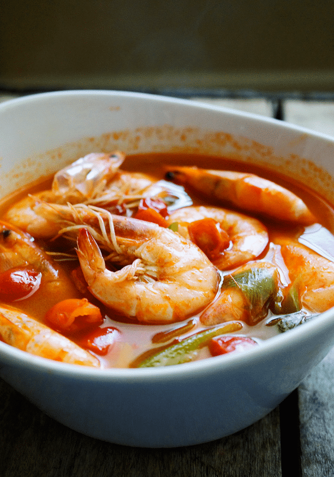
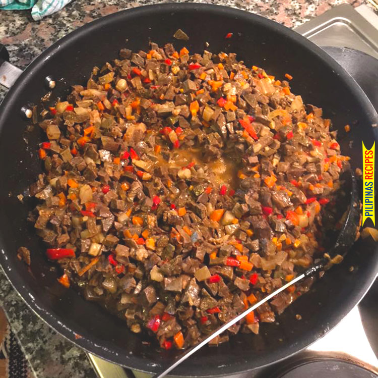
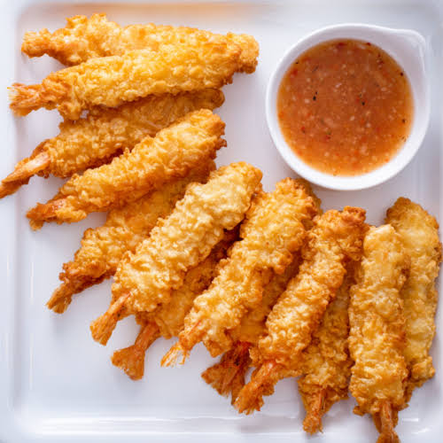

Top 1: Shrimp Sinigang
A comforting Filipino sour soup with fresh shrimp and vegetables.

Top 2: Spicy Bopis
A rich, savory dish packed with bold flavors and a spicy kick.

Top 3: Crispy Tempura
Light, crunchy, and perfect when served hot with a dipping sauce.